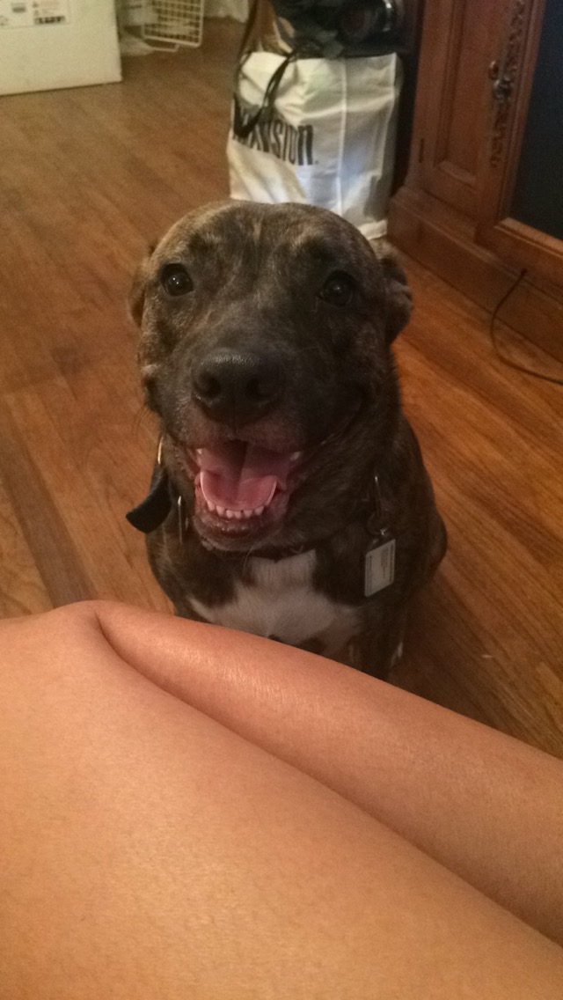

My Actvities

Our dogs are our babies. We consider them family from day 1, we care for them, and they become a vital part of our lives. From the way we spoil and gush about our dogs, some people may think we’re nuts. But we don’t care, because we know our pooches make us happier, healthier, and overall better people.
The phrase “crazy dog lady” is essentially a badge of honor. To be a Crazy Dog Lady, one does not necessarily have to be a lady, but one does have to go totally overboard in loving their pooch. There are some clear signs to look for if you suspect you may be a Crazy Dog Lady,for example, Your family photos aren’t taken with family but rather with dogs.
Having a dog is like having a best friend who doesn’t judge what you eat or how often you shower. They are reliable, adorable and a source of pure entertainment. You love that little canine and have made your entire world revolve around him or her.You tell your pet all of your secrets, rant about people and work and your life, and know deep down that if they actually ever did begin talking, you would be in a world of trouble.